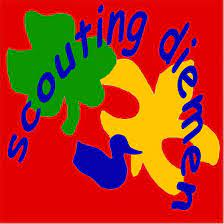

Mijn hobby's
Ik heb niet heel veel hobby's. Alhoewel ik heb er wel één ontdekt, ik vindt programmeren echt geweldig en ik ga er zeker meer proberen te programmeren. Zelf heb ik ook gamen als een hobby en ik vindt fuguurzagen ook heel leuk. ik ben ook heel geintreseert in de ruimte en in de exacte vakken, zoals wiskunde, scheikunde, natuurkunde en biologie.
Ik heb dus niet heel veel hobby's en daarom doe ik meestal veel huiswerk en anders kijk ik meestal youtube.
Ik zit ook op scouting Diemen en ik vind het hartstikke leuk daar. ik heb er veel vrienden gemaakt. ik raad het zeker aan om op scouting te gaan als je houdt van natuur en
Ik ben zelf ook best wel geïntreseert in de ruimte, sterren en planeten.